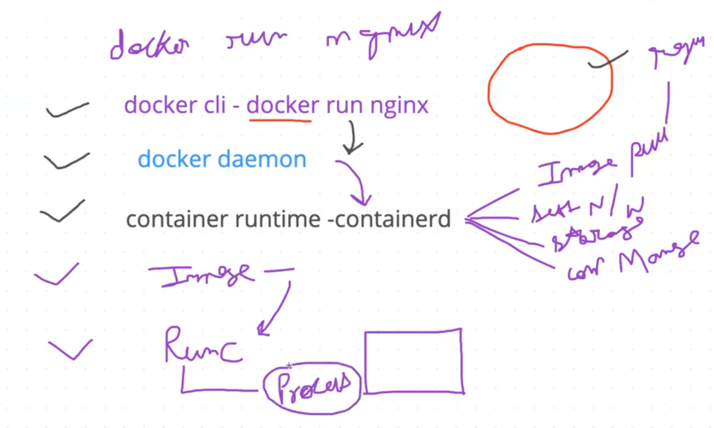
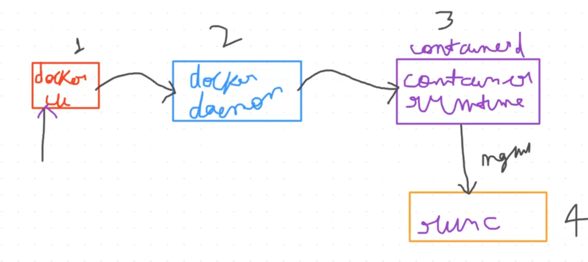
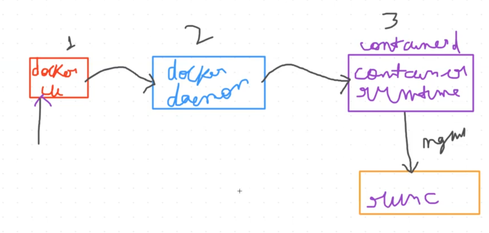
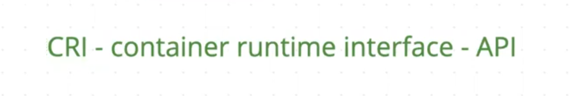
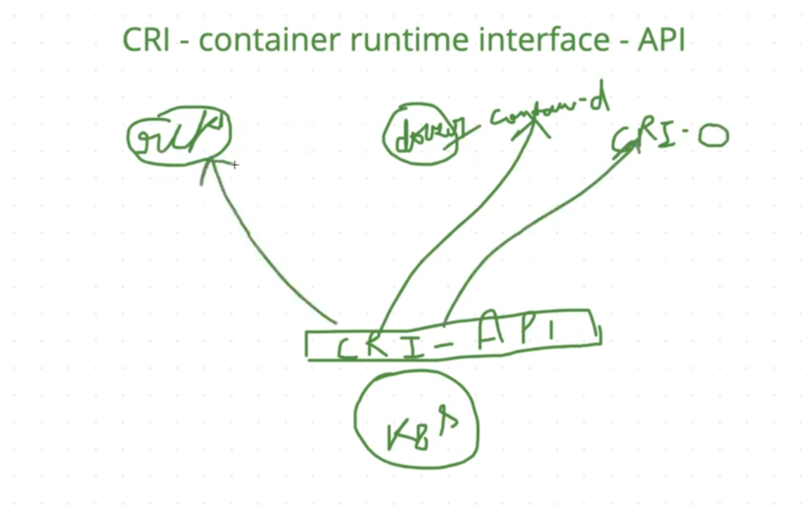
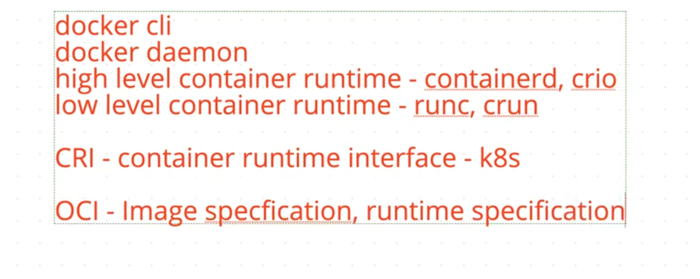

11-containerd-container-runtimes-cri-oci-screenshots.pdf in this folder.docker run nginx: docker CLI → docker daemon → containerd (image pull, set network/storage, container manage) → runc → process




